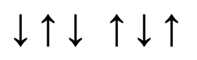
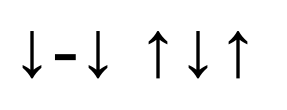

How to strum
Strumming is absolutely vital to playing the panduri. The way that Georgians play panduri actually reminds me more of percussion players than string players. Panduri players are praised for their superhuman strumming speeds and absurdly precise articulation. Strumming is very important, so pay attention!
As we discussed in the previous section, your right hand should hover at around where the body narrows into the neck. Your arm should rest on the body of the panduri, and most of the movement should be within your wrist. In general, when you are playing a downstroke, meaning striking the strings downward, you should be using your index finger, and when you are playing an upstroke, you should be using your thumb. The reason I recommend this is because there are some more advanced strumming techniques that require using your thumb, so you may as well get used to it now. That being said, I see panduri players playing with only their index finger all the time, so do what feels comfortable.
Now we'll learn about traditional Georgian rhythm. Much of Georgian music is in 6/8 time, which just means that there are two main beats which are each divided into three beats to form a total of six beats. Here is a visual representation of what I just said:
As you can see, there are six beats total, separated into two groups of three. The way this is counted is as follows: ONE two three FOUR five six. Practice playing this pattern on your panduri, with the accents on the first beat of the two groups: DOWN up down UP down up.
The traditional Georgian strumming pattern that we want omits the second of the six beats, like this:
So where the dash is, don't play anything. During the dash, where the upstroke was, do the motion of the upstroke, but don't hit the strings. It should sound like a one beat pause, like this: DOWN (pause) down UP down up. And there you have it! That is the traditional Georgian strumming pattern. Practice it slowly and evenly until you can play it faster and faster, and pretty soon you'll sound like a real Georgian musician.